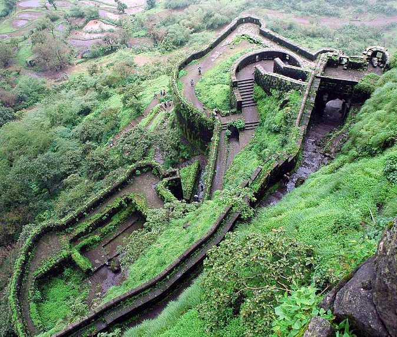

Sinhagad Fort


Located in the Sahyadri Mountains, Sinhagad Fort is an ancient fortress known for its historical significance and architecture. It was once known as Kondhana and has witnessed a number of battles; one notable battle being the 1670 Battle of Sinhagad. The name, “Sinhagad”, literally means Lion’s Fort signifying its strength and brilliance. Today, the structure is a perfect landmark for trekkers as it is located at a height of over 750 metres in the Sahyadri Mountains. In fact, the fort is strategically built right in the centre of the line of Maratha forts built in the Sahyadris. Some of these citadels are the Rajgad Fort, Torna Fort and the Purandar Fort. The place is also famous among photographers and nature lovers.
How to reach
Nearby Places

Aquarius Resort

Teak Trail

Forest Park